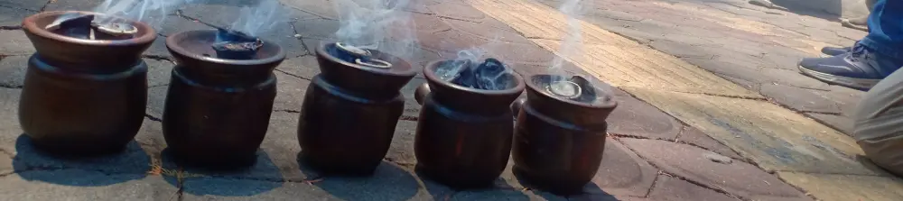

Tips Mudah Mengusir Ular dari Rumah: Memanfaatkan Aroma Kuat Kemenyan dan Pewangi
Dipublikasikan pada 23 September 2025

Saat berkunjung ke wilayah selatan Daerah Istimewa Yogyakarta, tim Mas Tukang pernah mencium aroma rokok yang sangat unik. Bukan aroma tembakau atau cengkeh, melainkan aroma kemenyan yang menyeruak kuat.
Tidak lama kemudian, terjadi kejadian tak terduga: ada ular yang masuk ke dalam rumah. Dari situ, kami mulai mencari tahu cara efektif untuk mencegah ular masuk. Ternyata, salah satu cara yang cukup ampuh adalah dengan menghadirkan aroma wangi yang kuat di dalam rumah, salah satunya dengan membakar kemenyan.
Langkah-Langkah Praktis Membakar Kemenyan Arab
Anda bisa membeli kemenyan Arab dengan mudah di berbagai online marketplace. Berikut adalah cara mudah menyalakannya:
- Siapkan Bara Arang: Siapkan bara arang terlebih dahulu. Anda bisa menggunakan kompor arang. Tim Mas Tukang pernah membagikan tips praktis menyalakan kompor arang menggunakan bantuan torch dan kipas angin portabel.
- Panaskan Bara: Biarkan bara arang menyala sempurna. Sambil menunggu, Anda bisa memanfaatkan panasnya untuk merebus air.
- Bakar Kemenyan: Setelah bara siap, ambil patahan kecil kemenyan Arab seperlunya, lalu letakkan di atas bara arang. Dalam hitungan detik, aroma khas kemenyan akan menyebar ke seluruh ruangan.
Mengapa Aroma Kemenyan Bisa Mengusir Ular?
Aroma wangi yang kuat, seperti dari kemenyan yang dibakar, dipercaya dapat membuat ular menjauh atau keluar dari ruangan. Meski begitu, Anda tidak harus menggunakan kemenyan. Pewangi ruangan biasa juga bisa memberikan efek serupa. Tips ini sangat berguna, terutama jika rumah Anda berada dekat area persawahan yang menjadi habitat alami ular.
Jika Anda ingin melihat proses lengkapnya, silakan tonton video singkat tentang cara mudah membakar kemenyan di bawah ini. Semoga tips ini bermanfaat untuk menjaga rumah Anda tetap aman dan nyaman.